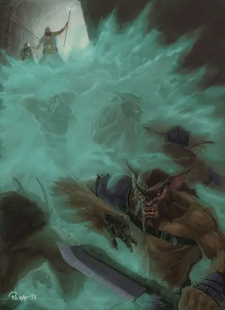

Облако смерти
Cloudkill
5 уровень, Вызов

Время сотворения 1 действие
Дистанция 120 футов
Компоненты В, С
Длительность Концентрация, вплоть до 10 минут
Классы Волшебник, Чародей
Подклассы круг земли (друид), круг спор (друид), домен смерти (жрец), алхимик (изобретатель), нежить (колдун), клятва покорения (паладин)
Вы создаете сферу с радиусом 20 футов из ядовитого жёлто-зелёного тумана с центром на точке, выбранной вами в пределах дистанции. Этот туман огибает углы. Он существует, пока активно заклинание, или пока сильный ветер его не развеет, окончив длительность. Его пространство — сильно заслонённая местность. Когда существо впервые за ход входит в область заклинания или начинает там ход, оно должно совершить спасбросок Телосложения. Существо получает 5к8 урона ядом при провале или половину этого урона в случае успеха. Существо попадает под действие заклинания даже если задерживает дыхание или вообще не должно дышать. Облако в начале каждого вашего хода перемещается на 10 футов прочь от вас, катясь по поверхности. Испарения, будучи тяжелее воздуха, стекаются вниз и даже могут проникать в отверстия.
На больших уровнях. Если вы накладываете это заклинание, используя ячейку 6-го уровня или выше, урон увеличивается на 1к8 за каждый уровень ячейки выше пятого.